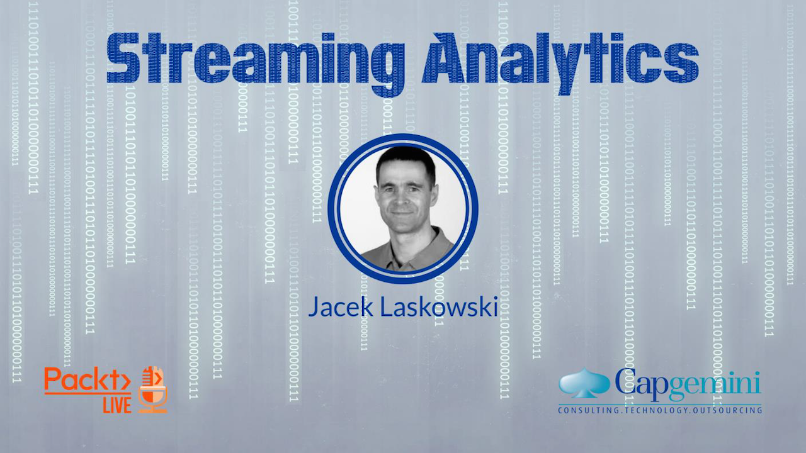
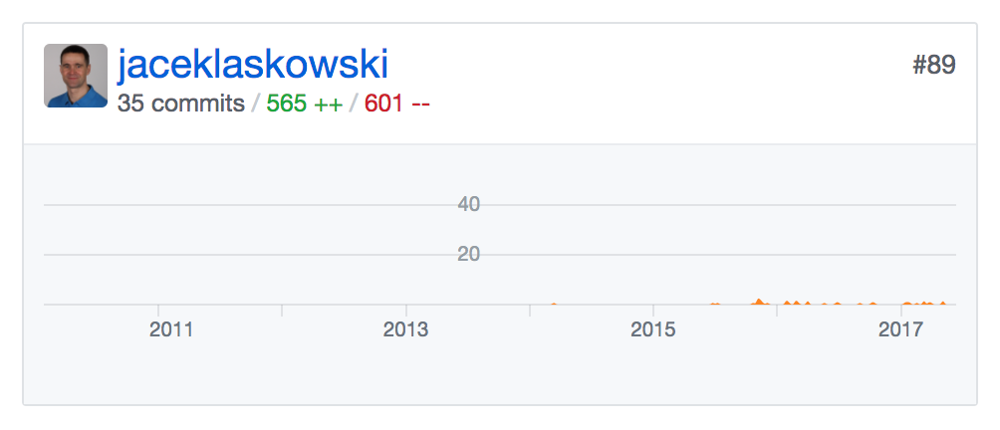

Streaming Analytics
Apache Spark
@jaceklaskowski / StackOverflow / GitHub
Gitbooks: Mastering Apache Spark / Spark Structured Streaming
- Jacek Laskowski is an independent consultant
- Specializing in Spark, Kafka, Mesos, DC/OS, Scala
- Among contributors to Spark 2.1, Spark 2.0 (since 1.6.0)
- Contact me at jacek@japila.pl or follow me on twitter at @JacekLaskowski <-- and learn more Spark!
- Delivering Development Services | Consulting | Training
- Leader of Warsaw Scala Enthusiasts and Warsaw Apache Spark
- Java Champion
https://github.com/jaceklaskowski

https://bit.ly/mastering-apache-spark

Ranked #91 in Spark contributors

https://stackoverflow.com/tags/apache-spark/topusers

https://twitter.com/jaceklaskowski